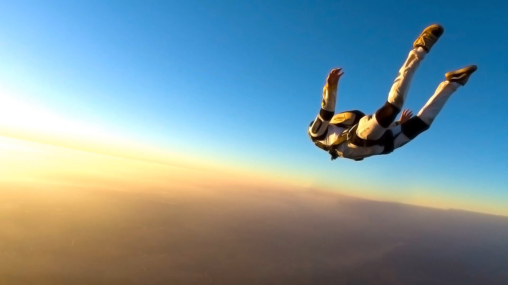

My Favourite Sports
|  |
SkydiveMulholland Drive est un film à énigme néo-noir américano-français écrit et réalisé par David Lynch et sorti en 2001 |

|
Scuba DivingOrange mécanique est un film d'anticipation britannique écrit et réalisé par Stanley Kubrick, sorti sur les écrans en 1971. |
SnowboardEdward aux mains d’argent est un film américain réalisé par Tim Burton, sorti en 1990. |